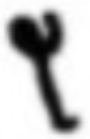
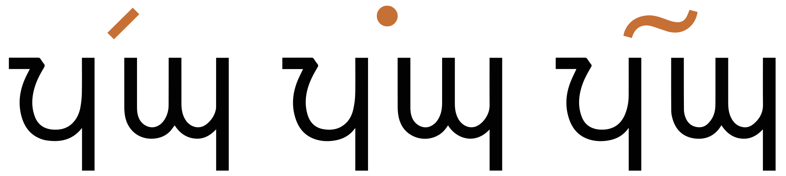
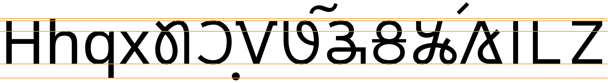

This page brings together basic information about the Nag Mundari (Mundari Bani) script and its use for the Mundari language. It aims to provide a brief, descriptive summary of the modern, printed orthography and typographic features, and to advise how to write Mundari using Unicode.
The Mundari language is spoken in northeast India, primarily in the states of Jharkand, West Bengal, and Odisha, by around 1.1 million people.@Ethnologue,https://www.ethnologue.com/language/unr/. Mundari may be written in Devanagari, Bengali, and Oriya scripts, as well as Nag Mundari (also known as Mundari Bani). The Unicode proposal describes a 'huge' surge of interest in recent years in the script, with schools teaching Mundari Bani as well as workshops many Munda-inhabited districts. The state government of Odisha runs the Multilingual Education (MLE) Programme for tribal children to teach children their mother tongue. Mundari is one of the languages covered in their programme.m It is estimated that approximately 10% of Mundari speakers can read Mundari Bani.wm
𞓧𞓟𞓨𞓜𞓕𞓣𞓚
The script was invented by Rohidas Singh Nag (1934 - 2012) in the latter half of the 20th century. A significant reform of the script took place in 2008, and all material printed today uses that version of the orthography. The reform simplified or changed the shape of some letters, and added symbols for ɳ and w. The Unicode proposalwm,7-8 has a table showing the differences.
The Nag Mundari script is an alphabet. Both consonants and vowels are indicated by letters, and the script is mostly quite straightforward. See the table to the right for a brief overview of features for the modern Mundari orthography.
Mundari text runs from left to right in horizontal lines. Words are separated by spaces. The orthography is unicameral.
Mundari represents consonants using 22 basic letters, plus one diacritic. ❯ consonants
An unusual feature of Nag Mundari is that the sound w is written using a diacritic below the letter representing the following vowel. This applies for standalone vowels as well as for syllable onset clusters. ❯ onsets
Another unusual feature of Mundari is that word-final b and d may be pronounced as checked sounds ˀb̥(ᵐ) or ˀd̥(ⁿ). This can be signalled by placing the special letter 𞓫 before the consonant. ❯ finals
A diacritic can be used to extend the repertoire when close transcription of words from neighbouring languages is desired. ❯ extendedC
There are no conjunct forms or ligatures. Gemination is not a feature of the Mundari language, but 𞓫 may be used to indicate gemination in close transcriptions of neighbouring languages. ❯ clusters ❯ clength
The Mundari orthography is an alphabet that writes vowels using 5 vowel letters. Two diacritics indicate vowel length and nasalisation; they are placed above and to the right side of the base, and may overlap following letters. The use of these diacritics varies from one author to another. ❯ vowels
Standalone vowel sounds are written using the normal vowel letters. ❯ standalone_vowels
Punctuation includes that used for the Latin script. Mundari has its own set of digits. ❯ phrase
Line-breaking and justification are primarily based on inter-word spaces.
The following represents the general repertoire of the Mundari language.
Click on the sounds to reveal locations in this document where they are mentioned.
Phones in a lighter colour are non-native or allophones. Source Wikipedia.
Vowel sounds
Vowels can be long or short, but length is not phonemically contrastive.o,100
Vowels following a nasal, following d͡z (optional), or preceding ɳ are normally nasalised. Nasalisation is not contrastive, either.o,100
Consonant sounds
labial
dental
alveolar
post-
alveolar
retroflex
palatal
velar
glottal
stop
pb
td
ʈɖ
kɡ
ʔ
aspirated
pʰ
tʰ
ʈʰ
kʰ
affricate
t͡ɕd͡ʑ
aspirated
d͡ʑʰ
fricative
s
h
nasal
m
n
ɳ
ɲ
ŋ
approximant
w
l
j
trill/flap
r
ɽ
Aspiration only occurs in the Naguri and Kera dialects.wl
Checked consonants
Checked consonants are a special feature of Mundari phonology. They may occur in morpheme-final position as ˀb̥(ᵐ) or ˀd̥(ⁿ). These are pronounced by closing the glottis while articulating the stop, then the glottal stop is released (in monosyllabic words only) with an optional nasal release.
Tone
Mundari has no tones.
Structure
See page 101 of Osada for detailed information about where sounds appear in words.
w and j never occur in word-initial position.o,101
Vowels
Vowel summary
Another diacritic is added to the vowels to indicate nasalisation (not shown here).
These diacritics are placed above and to the right side of the base, and may overlap following letters. Their use varies from one author to another.
Standalone vowels
Standalone vowel sounds are simply represented using ordinary vowel letters.
Long vowels
𞓭
1E4ED is used to indicate long vowels, but not all long vowels are so marked.
𞓐𞓪𞓕𞓭
𞓗𞓚𞓭𞓔
Nasalisation
𞓬
Nasalisation of vowels is indicated using 1E4EC.
𞓧𞓟𞓬
Tones
Mundari is not a tonal language.
Vowel sounds to characters
This section maps Mundari vowel sounds to common graphemes in the Nag Mundari orthography. Click on a grapheme to find other mentions on this page (links appear at the bottom of the page). Click on the character name to see examples and for detailed descriptions of the character(s) shown.
i
1E4DA
ĩ
𞓚𞓬
iː
𞓚𞓭
u
1E4DF
ũ
𞓟𞓬
uː
𞓟𞓭
e
1E4E4
ẽ
1E4E4 1E4EC
eː
1E4E4 1E4ED
o
1E4D0
õ
1E4D0 1E4EC
oː
1E4D0 1E4ED
a
1E4D5
ã
1E4D5 1E4EC
ã
1E4D5 1E4ED
Consonants
Consonant summary
Additional sounds can be produced to match those of surrounding languages using 1E4EF. Those combinations are not shown here.
The sound w is written by adding the combining mark 1E4EE to the vowel that follows. It is used this way for onset consonant clusters such as
𞓢𞓕𞓮kʷa,
𞓢𞓮𞓚kʷi,
etc., but the sources imply that it is also used for sounds such as
𞓕𞓮wa,
𞓚𞓮wi,
etc., although Osadao,101 says that w never occurs word initially.
𞓨𞓕𞓐𞓬𞓕𞓮 𞓢𞓕𞓧𞓚𞓨𞓕𞓒𞓕
Observation: This doesn't appear to be common. Most sources show this diacritic centred below the vowel letter, rather than placed to the right as it appears in the Noto font used for this page.
There are no special mechanisms to indicate the absence of a vowel.
Syllable onsets
Mundari syllables can begin with a consonant cluster, but they are just written using the relevant letters, except for CʷV, as described just above, where the medial glide is written using a combining mark on the vowel letter.
Final consonants
Syllable-final consonants are also generally just represented by ordinary letters, but again there is an exception.
Checked finals
𞓫
Final b or d in Mundari may be pronounced 'checked'. These checked sounds are written using 𞓫 before the consonant.
𞓒𞓕𞓩𞓕𞓫𞓗
Some authors don't use this.wm,5
 is an alternative shape which can be found in recent texts.
Consonant clusters
Mundari has no conjunct forms for consonant clusters.
𞓧𞓟𞓨𞓜𞓕𞓣𞓚
Gemination
Consonant gemination isn't common in Mundari, but may occur in words from other, neighbouring languages when they are transcribed. 𞓫 can be used for this.
Consonant sounds to characters
This section maps Mundari consonant sounds to common graphemes in the Nag Mundari orthography. Uppercase is not shown. Click on a grapheme to find other mentions on this page (links appear at the bottom of the page). Click on the character name to see examples and for detailed descriptions of the character(s) shown.
Sounds listed as 'infrequent' are allophones, or sounds used for foreign words, etc.
Stops
p
𞓑
b
𞓗
𞓫𞓗 when checked in final position.
t
𞓝
d
𞓡
𞓫𞓡 when checked in final position.
ʈ
𞓩
ɖ
𞓜
k
𞓢
ɡ
𞓦
ʔ
𞓙
Affricates
t͡ʃ
𞓠
d͡ʒ
𞓖
Fricatives
s
𞓖
h
𞓞
Nasals
m
𞓧
n
𞓨
ɲ
𞓘
ɳ
𞓥
ŋ
𞓔
Other
w
𞓮 placed below the letter representing the following vowel sound.
r
𞓣
ɽ
𞓪
l
𞓒
j
𞓓
Numbers, dates, currency, etc
Digits
Mundari has its own set of digits, with a decimal base.
𞓰␣𞓱␣𞓲␣𞓳␣𞓴␣𞓵␣𞓶␣𞓷␣𞓸␣𞓹
Digits may also be written using Latin, Devanagari, Bengali, or Oriya number shapes.wm,6
Mundari text is written horizontally, with lines that flow from top to bottom.
Glyph shaping & positioning
This section brings together information about the following topics:
writing styles;
cursive text;
context-based shaping;
context-based positioning;
font styles;
case & other character transforms.
There are no conjuncts in Mundari, and no shaping is needed for letters.
Mundari does have a few combining marks, and these need to be combined with the base appropriately. Some marks may be far enough to the right to slightly overlap the following letter as well.

Three combining marks over Mundari letters in the Noto Sans Nag Mundari font. They slightly overlap the following letter also.
Observation: Phonetic transcriptions of words show many that have long, nasalised vowels. It is not clear whether the script shows 2 combining marks together in such a case – no such combinations were spotted in the online resources linked to below.
Font styling & weight
tbd
Graphemes
In Mundari text, grapheme clusters typically correspond to whole syllables. Where combining marks appear, the combination of base and combining mark still fits within the definition of a grapheme cluster.
Punctuation & inline features
Word boundaries
Words are separated by spaces.
Some compounds and reduplicative phrases are linked by a hyphen, which is called eched.
Mundari texts may use quotation marks around quotations. Of course, due to keyboard design, quotations may also be surrounded by ASCII double and single quote marks.
The principal line-break opportunities are inter-word spaces.
Text alignment & justification
Full justification may be achieved by altering the width of inter-word spaces.
Text spacing
tbd
Baselines, line height, etc.
tbd
Mundari Bana uses the 'alphabetic' baseline.
In printed text, Mundari Bani has no ascenders or descenders, and all letters and digits are the same height. Combining marks appear above and below the letters.
To give an approximate idea, fig_baselines compares Latin and Mundari glyphs from the only available Unicode-encoded font at the time of writing: Noto Sans Nag Mundari. The height of Mundari letters is set to the Latin x-height, however the combining marks, especially above letters, push out beyond the Latin extensions.

Font metrics for Latin text compared with Mundari glyphs in the Noto Sans Nag Mundari font.
Counters, lists, etc.
tbd
Styling initials
tbd
Page & book layout
This section is for any features that are specific to Mundari and that relate to the following topics:
general page layout & progression;
grids & tables;
notes, footnotes, etc;
forms & user interaction;
page numbering, running headers, etc.